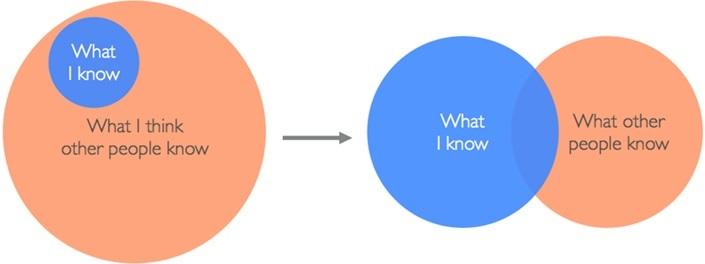

Be A Great Engineer - WITConf, University of Birmingham
My very first talk - speaking at the Women In Tech Conference 2.0 at The University of Birmingham.
About The Day
After a 4.30am rise, train journey in, and one terrible coffee; I had arrived at the University of Birmingham. I had been invited to speak at the Women In Tech 2.0 Conference. This is an event organised by oSTEM at Birmingham, WISE at Birmingham and CSS Birmingham.
This was my very first go at doing a public talk, and admittedly it took a lot of arm twisting by Tom Goodman. I’m not the most confident at this kind of thing (despite what my online presence might suggest) but Tom is a wizard.
All in all the day was great fun. I got to meet some smart people, eat way to much food and learn. The organisers were very sweet - pumping caffeine into me every moment and checking all the attendees were having a good time. It was a really nice touch that they gave all the speakers a bunch of flowers too. I also enjoyed having the opportunity to see Samathy speak at the event. We have crossed paths occasionally but this was the first chance to get to know her well, and her talk was really well delivered.
The experience of the talk was not as bad as expected either. It is still scary. I didn’t trip and fall on my face. People seemed to like it.
The Talk - “Be A Great Engineer”
Below is a cut down version of the talk I gave. Hopefully it translates well without the hand waving and gesturing. I was going to share the slides alone, but there is nothing on them, so instead I have written it out.
You will never stop learning

This is my favourite thing about being an engineer. There is an endless wealth of things to learn about. Even when you think you have the handle on a topic, new stuff will come out in the next ten minutes.
It’s overwhelming. It’s exciting. It’s your future.
Want to be a great engineer? Study. This isn’t just reading the books and the blogs. This is attending hackathons, going to meetups, being part of your tech community, contributing to open source, practising with homebrew projects and more.
It sounds like a lot but you don’t have to do it all. At hackathons and meetups, you can learn from people and find out about areas you wouldn’t normally be exposed to. By doing some code at home you can practice and try out new things.
Don’t let it eat up your life, but if you are passionate about something chase it. Don’t be afraid to write a blog or do a talk if you learn something cool. Even if it’s something that isn’t “cool” but is useful, someone will probably benefit from it. The never ending cycle of knowledge sharing will continue.
Never Be Afraid To Ask
There is NO SUCH THING AS A STUPID QUESTION. I know, cliché and who believes it; but it’s TRUE!
If you don’t understand something ask. If you think you could learn more in an area you are interested in, ask for resources. If you have forgotten something you got shown how to do 10 minutes before and don’t know where to look it up, ask someone to show you again.
Sometimes you will make mistakes. Sometimes you will so something wrong. That’s ok! When this happens, put your hands up, acknowledge that you’ve done something wrong. If you can’t fix it, ask for help. No one is judging you. Sit with them while they fix it and learn from it.
There are a few things you shouldn’t do. One is to try to hide a mistake, especially if you can’t fix it. Another is to pretend you understand something that you don’t. You are only cheating yourself out of the opportunity to learn. Honesty is the best policy.
Experience != Intelligence
If you are lucky you will be surrounded by talented and more experienced developers than you. This is a great place to be, but it can also be hard.
These people have had YEARS to learn. Even if they have the same amount of experience, they may have focused on a different area from you and learnt about it to a further degree. Do not mistake their different experience to intelligence. You are smart. It’s likely you are learning at AT LEAST the same pace as the people you work with. You may even have some knowledge that your colleagues don’t.

The other side to this is that you will work with people who forget what it’s like to be new. They might treat you like you know very little. Remind them that you are new to this and that they had to learn once too. There is a way to work with people that have more experience without feeling very small about yourself. If someone makes you feel small, that is something they need to work on to avoid doing. Even the most experienced developers can learn from the newest. This is all thanks again to the vast field we work on. In this field we all get different experiences, and exposure to different techniques. As such we can all learn from each other.
You Are Smart Enough For Anything.
You can be a great engineer. You can be a great engineer in any way you want to be.
For some reason, back end development has a crazy reputation for being complicated and mathsey which puts some people off. It’s really not. It requires logic, but that’s fun! If you get the opportunity, give it a try. You might be better at it than you know, and might enjoy it more than you can fathom. If you struggle with it, or don’t enjoy it, that’s fine. You tried it. You have a different preference or skill set. You will still benefit from the experience as you will have a better overview of the system.
Even Though Sometimes It Won’t Feel Like It

There is a common theme throughout these points. Some days you will feel on top of the world; while others, not so much. The self-doubt, the comparisons to other colleagues, the sometimes feeling alone. Turns out this is a thing. It’s called imposter syndrome. Want to know a secret - it’s common. It’s hard to fight, but together we can.
Imposter syndrome is a huge topic, much to big to go into here. Part of it is feeling like a fraud. Like you aren’t as good as everyone around you. Feeling like you don’t deserve the position you’re in and that someone is going to realise how crap you are. It’s also feeling isolated from the people around you. That you can’t relate. Feeling like their experiences are completely unrelated to your circumstance, so you can’t judge if you will ever be as good as them.
This will happen, there is no real way of avoiding it. When you start to see someone else crumble, reach out to them. Point out the awesome job they are doing. Get them away from their desk and get them to grab a coffee, be a sympathetic and empathetic ear.
Together we can help each other. All of you can and will be great engineers, even if sometimes it won’t feel like it.
You can do anything!
Right now the world is a bit scary. Knowing if you are going down the right path is not something that necessarily comes easily.
You know what? It’s not the end of the world. You might be good at one part of development and suck at another. I am working to be a great back-end engineer. Part of this is because I SUCK at front end engineering. You might not enjoy a certain challenge within engineering yet flourish in another.
If after a few years, you aren’t enjoying being an engineer, there are many roles you can move into that don’t involve code and are still very rewarding. Don’t sink under the pressure. If you knew everything about your future, life would be dull. You will be great.
Take every opportunity
In this unknown future, you will have the opportunity to do many great things. Some of them will seem alien and scary which might put you off. Some, you might think are beyond you.
Weigh up the advantages and disadvantages to these opportunities. Not just for your present role but what you might do in the future. Will you learn a new skill? Would it strengthen your knowledge in certain area? Is it just new and exciting?
Then think how it might benefit the company you work for. Exposure, recruitment etc. If the opportunity is something you may need funding for, your company is likely to help with these kinds of things, but sometimes you will need to put a case together for why it would benefit them.
As with anything if you can think of more costs than benefits, then the opportunity is not worthwhile. Just keep in mind that your fear of self-confidence shouldn’t be a negative. Ride that wave!
Now I say this like it is the easiest thing in the world. I know it’s not. Part of why I started Women In Tech in Nottingham was because I felt there was a need for it, that I could do it well and that it would help build upon the social skill of talking to strangers without looking at my own feet. Nine months later, here I am doing my very first talk. Talking to strangers, talking about a subject with confidence, being able to express myself clearly. All skills I will take back to my day to day job. All learnt from diving in the deep end.
There are advantages I didn’t even consider too. I’ve met great people, gone to places I would have never had the opportunity to going to, learnt more than what I considered I might do. It’s good to stick your middle finger up to fear, and profit from it.
Don’t be afraid to fight back
Now you know that you are all empowered, intelligent people who are going to be great in this industry and do things you never thought you would do. Sometimes, you will have to fight to make other people realise this.
Just because people think they know what’s best for you, doesn’t mean they are right. If you stand up for yourself, they will respect your honesty and drive. Be diplomatic though, don’t go in with unsupported arguments and expect the world. Most of the time, you know what is best for you. Have the confidence to stand up for what you want. This includes area of your work, pay-rises, promotions, going to conferences and other opportunities.
You are a valuable asset. A great engineer. Make sure the world knows it.